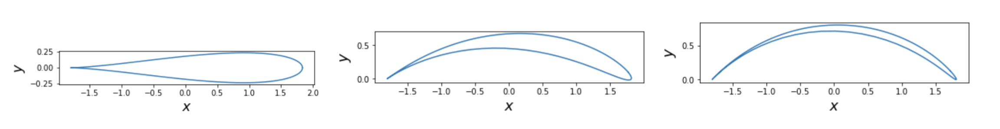
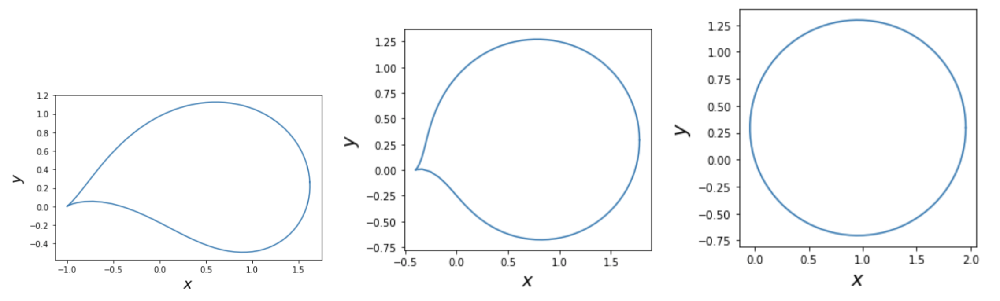
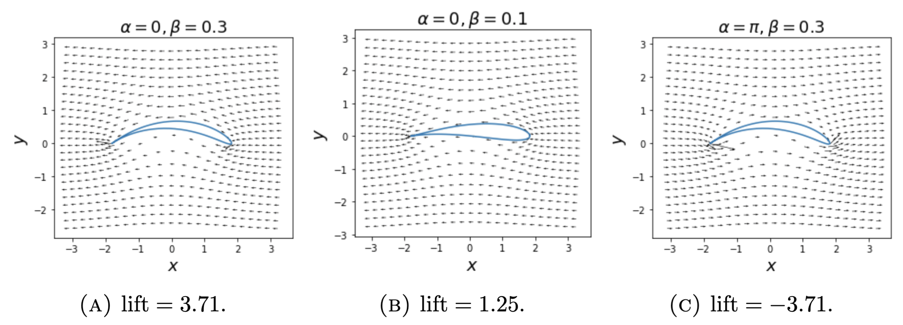
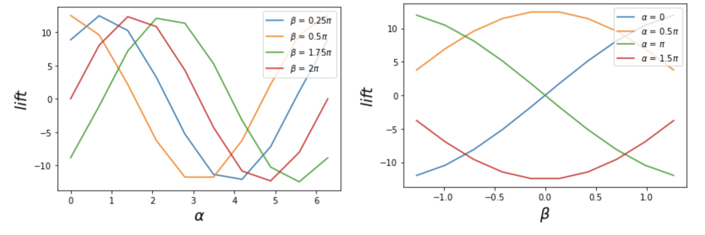

we are going to use complex-variable methods to compute two-dimensional irrotational flows of inviscid incompressible fluids around objects. We can use complex mappings to find flows around more complicated shapes than the circular cylinder.
Singularities
Consider a complex variable \(\zeta = \xi + \mathrm{i} \eta\) and the flow around a disc \(D\) of radius \(c\) centred at some \(\zeta_0\) in the \(\zeta\)-plane. Let \(\kappa\) be the circulation, the complex potential corresponding to this is
\[ \hat{w}(\zeta)=-(U-\mathrm{i} V)\left(\zeta-\zeta_0\right)-(U+\mathrm{i} V) \frac{c^2}{\zeta-\zeta_0}-\frac{\mathrm{i} \kappa}{2 \pi} \log \frac{\zeta-\zeta_0}{c}. \]
We can use an invertible map \(z=f(\zeta)\) that is analytic outside the disc and getting close to the identity as \(|\zeta| \rightarrow \infty\) to define a complex potential in the \(z\)-plane by \[ w(z)=\hat{w}(\zeta) \quad \text { with } \quad z=f(\zeta). \]
This complex potential then describes the flow around the image of \(D\) by the map \(f(\zeta)\). To compute the flow around realistic-looking wings, we take the map \[ f(\zeta) = \zeta + \frac{\lambda^2}{\zeta}, \quad 0 \leq \lambda < 1, \] and \(\zeta_0\) in the complex plane. We are going to examine the singularities of the inverse map \(f^{-1}(z)\). We say \(z_0\) is a singularity of \(f\) if \(f\) is not holomorphic at \(z_0\). Inverting and differentiating \(f(\zeta)\) we get \[ \zeta = f^{-1}(z) = \frac{z \pm \sqrt{z^2 - 4\lambda^2}}{2}, \space \text{and} \quad \frac{\partial\zeta}{\partial z} = \frac{1}{2} \pm \frac{z}{\sqrt{z^2-4\lambda^2}}. \]
By definition, the derivative is not defined at \(z = \pm 2\lambda\), so \(z = \pm 2\lambda\) are square root singularities of \(f^{-1}(z)\), corresponding to \(\zeta = \pm \lambda\).
We let \(\zeta_0 = - \lambda + c e^{\mathrm{i} \beta}\) for some \(\beta > 0\) such that \(c\cos{\beta} > \lambda\). Now we are going to identify the positions of the singularities. For \(\zeta = \lambda\), we can compute the distance from the centre \(\zeta_0\) to \(\zeta\) as \[ \begin{align*} | \zeta_0 - \zeta | = |-2 \lambda + c e^{\mathrm{i} \beta}| &= |-2 \lambda + c(\cos{\beta} + \mathrm{i}\sin{\beta})| \\ &= \sqrt{(-2 \lambda + c\cos{\beta})^2 + c^2\sin^2{\beta}} \\ &= \sqrt{4\lambda (\lambda - c\cos{\beta}) + c^2(\cos^2{\beta} + \sin^2{\beta})} \nonumber <\sqrt{c^2} = c. \end{align*} \]
Since \(| \zeta_0 - \zeta |\) is shorter than the radius of the disc \(D\), the singularity \(\zeta = \lambda\) is inside \(D\). Similarly, we get \(| \zeta_0 - \zeta_1 | = |c e^{\mathrm{i} \beta}| = c\) for \(\zeta_1 = -\lambda\), indicating that the singularity \(\zeta_1\) is on the circle \(\partial D\).
Flow around wings


As \(c\) is the radius of disc \(D\), we may fix it as a constant. For simple calculation we take \(c = 1\). The resemble wings all have a smooth leading edge and a cusp at the trailing edge corresponding to \(\zeta =\zeta_1\), except the one on the bottom right. We found that a wing with larger value of \(\beta\) has more curved shape. When \(\beta = 0\), the wing becomes a symmetric drop shape. We can say that the degree of curvature of the wing shape depends on \(\beta\). Also, it can be seen that a wing with lower \(\lambda\) has rounder shape. Particularly, when \(\lambda = 0\), the map becomes an identity map, hence the shape becomes a circle. Thus we may conclude that \(\lambda\) control the roundness of the shape.
We can compute the velocity field using the derivative of the flow as \[ \begin{align*} u-\mathrm{i} v=w^{\prime}(z)&=\hat{w}^{\prime}(\zeta) / f^{\prime}(\zeta) \\ &=\left(1-\lambda^2 / \zeta^2\right)^{-1}\left(-(U-\mathrm{i} V)+(U+\mathrm{i} V) c^2/(\zeta-\zeta_0)^{2}-\mathrm{i} \kappa /(2 \pi (\zeta-\zeta_0))\right)\\ &=\left(1-\lambda^2 / \zeta^2\right)^{-1}\left(-|\mathbf{U}|e^{\mathrm{i}\alpha}+|\mathbf{U}|e^{-\mathrm{i} \alpha} c^2/(\zeta-\zeta_0)^{2}-\mathrm{i} \kappa /(2 \pi (\zeta-\zeta_0))\right), \end{align*} \] where \(U + \mathrm{i}V = |\mathbf{U}|e^{-i\alpha}\) defines the angle of attack \(\alpha\). The velocity field is infinite at the trailing edge corresponding to \(\zeta_1 = -\lambda\) since \(f^{\prime}(\zeta_1) = 0\), except when \(\hat{w}^{\prime}(\zeta_1) = 0\).
Now we are going to derive an expression for the circulation, \(\kappa\), which takes a value such that the trailing edge velocity remains finite. So we need to find \(\kappa\) which makes \(\hat{w}^{\prime}(\zeta_1) = 0\). Using \(\zeta_1-\zeta_0 = -\lambda + \lambda - ce^{i\beta} = - ce^{i\beta}\), we have \(\hat{w}^{\prime}(\zeta_1) = -|\mathbf{U}|e^{\mathrm{i}\alpha}+|\mathbf{U}|e^{-\mathrm{i}(\alpha+2\beta)}+\mathrm{i} \kappa /(2 \pi c) e^{-\mathrm{i}\beta}=0\). Solving for \(\kappa\) we get \[ \kappa = (|\mathbf{U}|e^{\mathrm{i}(\alpha+\beta)} - |\mathbf{U}|e^{-\mathrm{i}(\alpha+\beta)})(2\pi c/\mathrm{i}) = 2|\mathbf{U}|\mathrm{i}\sin{(\alpha+\beta)}(2\pi c/\mathrm{i}) = 4\pi c|\mathbf{U}|\sin{(\alpha+\beta)}.\nonumber \]
Therefore, if \(\kappa \neq 4\pi c|\mathbf{U}| \sin{(\alpha+\beta)}\), we have \(\hat{w}^{\prime}(\zeta_1) \neq 0\), resulting a infinite velocity field at the trailing edge.
Resulting lift
The lift for the wing is computed as the force perpendicular to the velocity at infinity, \(\kappa|\mathbf{U}|\). Without loss of generality, we can take \(|\mathbf{U}| = c = 1\), thus we get an expression for lift which is \(4\pi \sin{(\alpha+\beta)}\). The lift for the wing therefore depends on \(\alpha\) and \(\beta\).

The expression for the lift of the wing indicates that the relationship between the lift and parameters \(\alpha\) and \(\beta\) is a sine function.

We can deduce from the plot that the lift is at maximum when \(\alpha + \beta = \pi/2\).
Discussion
We explored on how the complex formulation leads to predictions for the flow around wings. The roundness and curvature of the wings are controlled by \(\lambda\) and \(\beta\) respectively. We conclude that the velocity field is always infinite at the trailing edge unless \(\kappa = 4\pi c|\mathbf{U}|\sin{(\alpha+\beta)}\), and the maximum lift for the wing is then reached when \(\alpha + \beta = \pi/2\). However, for flow of real fluid, if a viscous flow past a cylinder, it will acquire a thin boundary layer adjacent to the surface of the cylinder. A trailing wake will exist in the flow behind the cylinder due to Boundary layer separation. The pressure at each point on the wake side of the cylinder will be lower than on the upstream side, resulting in a drag force in the downstream direction